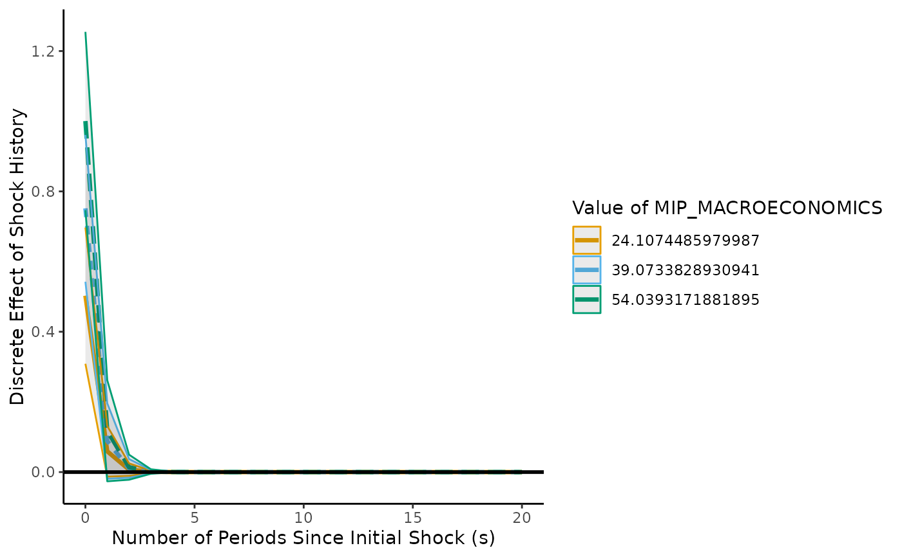

Evaluate and/or plot dynamic interactions from dynamic linear models
Source:R/tseffects.R
interact.adl.plot.RdEvaluate (and possibly plot) the dynamic conditional effect from an autoregressive distributed lag (ADL) model (following the framework of Warner, Vande Kamp and Jordan). The description here matches the prose of Warner, Vande Kamp, and Jordan
Usage
interact.adl.plot(
model = NULL,
x.vrbl = NULL,
z.vrbl = NULL,
x.z.vrbl = NULL,
y.vrbl = NULL,
shock.history = "impulse",
cumulative = FALSE,
effect.type = "discrete",
prediction.values = NULL,
baseline.y = NULL,
baseline.y.se = 0,
shock.size = 1,
plot.type = "lines",
line.options = "z.lines",
heatmap.options = "significant",
line.colors = "okabe-ito",
heatmap.colors = "Blue-Red",
z.vals = NULL,
s.vals = c(0, "LRM"),
z.label.rounding = 3,
z.vrbl.label = names(z.vrbl)[1],
dM.level = 0.95,
s.limit = 20,
se.type = "const",
return.LRM = TRUE,
return.data = FALSE,
return.plot = TRUE,
return.formulae = FALSE,
...
)Arguments
- model
the
lmmodel containing the ADL estimates- x.vrbl
a named numeric vector in which the names correspond to the “main” x variables and its lags and the numbers correspond to the specific lag order of each variable
- z.vrbl
a named numeric vector in which the names correspond to the “moderating” z variables and its lags and the numbers correspond to the specific lag order of each variable
- x.z.vrbl
a named numeric vector in which the names correspond to the “interaction” x:z variables and its lags and the numbers correspond to the specific lag order of each variable. IMPORTANT: enter the lag order that pertains to the “main” x variable. For instance, x_l_1_z (contemporaneous x times lagged z) would be 0 and l_1_x_z (lagged x times contemporaneous z) would be 1
- y.vrbl
a named numeric vector in which the names correspond to lags of the dependent variable and the numbers correspond to the specific lag order of each variable. Can be
NULLif the model has no lagged dependent variables- shock.history
either a character string, integer, or numeric vector for the desired shock history.
shock.historydetermines the shock history (h) that will be applied to the independent variable. Vande Kamp, Jordan, and Rajan express this as the parameter h (an integer). -1 represents the Impulse Response Function; the equivalent string ispulseorimpulse. 0 represents the Step Response Function; the equivalent string isstep. For others, see Vande Kamp, Jordan, and Rajan. However, since any shock history can be decomposed into a series of dated Impulse Response Functions, users can also supply any numeric vector of the same length as s.limit + 1. The default ispulse- cumulative
logical to return the cumulative effects or the period-specific effects of the given
shock.history. For instance, to obtain the Cumulative Impulse Response Function, setshock.historyto -1 andcumulative = TRUE. The default isFALSE- effect.type
a character string indicating whether to return discrete effects or fitted values.
discretereturns a discrete effect estimate.fittedreturns a fitted value, relative to a baseline value of the dependent variable. The default isdiscrete- prediction.values
a named list of values for non-y non-z variables in the model, used to calculate a steady-state baseline of the dependent variable when
effect.type = "fitted"andbaseline.yis not supplied. Model-based uncertainty will be calculated around the formula for this value. If any differenced variables are included in the model, they should be set to 0. If multiple lags of the same variable are included, they should be set to the same value (including for interactions). When working with interactions, these should be provided for any “main” x terms as well as the intended value of x for any “interaction” x:z terms. It is most sensible to use the same value of x for interaction terms with the same lag order: i.e.xandx:zwould both be contemporaneous x, soprediction.values = list("x" = 0, "x:z" = 0)would set both values of contemporaneous x to 0.prediction.values = list("x" = 0, "x:z" = 1)would set one contemporaneous x to 0 and the other to 1; this is inconsistent. See the vignette for more examples. The “interaction” x.z terms will then be multiplied by a value of z, passed either byz.valsor internally defined by the function. Ifreturn.formulae = TRUE, a generic placeholderz_valis used in the formula to represent where the relevantz.valhas been inserted to estimated the value- baseline.y
a numeric value for the user-supplied baseline value of y in levels (i.e. the baseline value for effects to accumulate from). Only used when
effect.type = "fitted"- baseline.y.se
a numeric value for the user-supplied standard error for the baseline value of y (to suggest uncertainty around predictions). Only used when
effect.type = "fitted". If supplied, this is added in quadrature to the standard errors of the predictions. The default is 0: in recognition that this is user-constructed uncertainty. Possible values would be the square root of the standard deviation of y- shock.size
a numeric value for the size of the shock to x in the units of x. Defaults to 1 (a discrete effect similar to traditional marginal effects)
- plot.type
a character string for the type of plot to create.
heatmapfeatures the combination of estimated effects across a set of values of z as well as a range of values of s. This is computationally intensive, as many effects are estimated.linesfeatures the estimated effects at discrete values of s/z. The default islines- line.options
a character string for the type of effect to calculate, if
plot.type = "lines".z.linesevaluates the moderator as discrete values of z across a range of s.s.linesevalautes the moderator as discrete values of s across a range of z. The default isz.lines- heatmap.options
a character string for the type of heatmap to draw, if
plot.type = "heatmap".allindicates that all discrete effects should be shown.significantindicates that only statistically significant discrete effects should be shown (since signficance indicators cannot appear on the heatmap). Note: this just sets the insignificant effects to the numeric value of 0. If the middle value of your scale gradient is white, these will effectively “disappear.” If another gradient is used, they will take on the color assigned to 0 values. If estimating fitted values, the function automatically switches toall, sincesignificantfitted values are a bit nonsensical. The default issignificant- line.colors
a character string for the line colors. This defaults to the color-safe Okabe-Ito (
okabe-ito) colors. There is also a grayscale option throughbw. Users can also include whatever colors they like; the number of colors must match the number of lines drawn. This is passed toscale_color_discrete- heatmap.colors
a character string for the heatmap colors. This defaults to the diverging gradient
Blue-Red. Alternate colors must be one ofhcl.pals(). For grayscale plots, useGrays. This is passed toscale_fill_gradientn- z.vals
a vector of numeric values for the moderating variable. If
plot.type = "lines", these are treated as discrete levels of z. Ifplot.type = "heatmap", these are treated as a lower and upper limit of a range of values of z. If none are provided,interact.adl.plotwill pick based on theplot.type- s.vals
a vector of values for the time since the shock at which to evaluate the discrete effects. This is only used if
line.options = s.lines, meaning s is treated as the moderator. The default is 0 (short-run) and theLRM- z.label.rounding
a numeric value for the digits to round to for the z labels in the legend (if those values are automatically calculated). The default is 3
- z.vrbl.label
an optional string to give as the name of the moderating z variable, used in plotting (to avoid ugly variable names in plot labels and legends)
- dM.level
a numeric value for the significance level of the (cumulative) discrete effects, calculated by the delta method. The default is 0.95
- s.limit
an integer for the number of periods to determine the (cumulative) discrete effects (beginning at s = 0)
- se.type
a character string for the type of standard error to extract from the model. The default is
const, but any argument tovcovHCfrom thesandwichpackage is accepted- return.LRM
logical to return the LRM in the estimates and plots, should the LRM exist for that combination of
shock.historyandcumulative. The default isTRUE- return.data
logical to return the raw calculated (cumulative) discrete effects as a list element under
estimates. The default isFALSE- return.plot
logical to return the visualized (cumulative) discrete effects as a list element under
plot. The default isTRUE- return.formulae
logical to return the formulae for the (cumulative) discrete effects as a list element under
formulae(for the (cumulative) discrete effects) andshocks(for the shock history). For interactions, the placeholder ofz_valis used to denote where a specific value of z is substituted. The default isFALSE- ...
other arguments to be passed to the call to plot
Value
if just one of return.data, return.plot, and return.formulae is TRUE, interact.adl.plot will return just the requested output. If more than one is selected (or just return.data is selected), it will return a list with elements plot (for the plot), estimates (for the data), and formulae and shocks for the (cumulative) conditional effects for each period as well as the applied shock history in integer form
Details
We assume that the ADL model estimated is well specified, free of residual autocorrelation, balanced, and meets other standard time-series qualities. It is imperative that you double-check you have referenced all x, y, z, and interaction terms through x.vrbl, y.vrbl, z.vrbl, and x.z.vrbl. You must also have their orders correctly entered. interact.adl.plot has no way of determining, from the variable list, which correspond with which
Examples
# Using Cavari's (2019) approval model
# Cavari's original model: APPROVE ~ APPROVE_ECONOMY + APPROVE_FOREIGN + MIP_MACROECONOMICS +
# MIP_FOREIGN + APPROVE_ECONOMY*MIP_MACROECONOMICS + APPROVE_FOREIGN*MIP_FOREIGN +
# APPROVE_L1 + PARTY_IN + PARTY_OUT + UNRATE +
# DIVIDEDGOV + ELECTION + HONEYMOON + as.factor(PRESIDENT)
approval$ECONAPP_ECONMIP <- approval$APPROVE_ECONOMY*approval$MIP_MACROECONOMICS
approval$FPAPP_ECONFP <- approval$APPROVE_FOREIGN*approval$MIP_FOREIGN
cavari.model <- lm(APPROVE ~ APPROVE_ECONOMY + APPROVE_FOREIGN + MIP_MACROECONOMICS +
MIP_FOREIGN + ECONAPP_ECONMIP + FPAPP_ECONFP +
APPROVE_L1 + PARTY_IN + PARTY_OUT + UNRATE +
DIVIDEDGOV + ELECTION + HONEYMOON + as.factor(PRESIDENT), data = approval)
# Now: discrete effect of X at different levels of Z
interact.adl.plot(model = cavari.model,
x.vrbl = c("APPROVE_ECONOMY" = 0), y.vrbl = c("APPROVE_L1" = 1),
z.vrbl = c("MIP_MACROECONOMICS" = 0), x.z.vrbl = c("ECONAPP_ECONMIP" = 0),
shock.history = "impulse", plot.type = "lines", line.options = "z.lines")
#> Warning: Variable names containing . replaced with _
#> Warning: Variable names containing ( replaced with _
#> Warning: Variable names containing ) replaced with _
#> Warning: return.LRM = TRUE but the effects decay to 0 as s -> infinity. No LRM is returned

# Use well-behaved simulated data (included) for even more examples,
# using the Warner, Vande Kamp, and Jordan general model
model.toydata <- lm(y ~ l_1_y + x + l_1_x + z + l_1_z +
x_z + z_l_1_x +
x_l_1_z + l_1_x_l_1_z, data = toy.ts.interaction.data)
# Discrete effect of z (not run: computational time)
# Be sure to specify x.z.vrbl orders with respect to x term
if (FALSE) interact.adl.plot(model = model.toydata, x.vrbl = c("x" = 0, "l_1_x" = 1),
y.vrbl = c("l_1_y" = 1), z.vrbl = c("z" = 0, "l_1_z" = 1),
x.z.vrbl = c("x_z" = 0, "z_l_1_x" = 1,
"x_l_1_z" = 0, "l_1_x_l_1_z" = 1),
z.vals = -2:2,
shock.history = "impulse",
plot.type = "lines",
line.options = "z.lines",
s.limit = 20)
# \dontrun{}
# Heatmap of discrete effects, since X and Z are actually continuous
# (not run: computational time)
if (FALSE) interact.adl.plot(model = model.toydata, x.vrbl = c("x" = 0, "l_1_x" = 1),
y.vrbl = c("l_1_y" = 1), z.vrbl = c("z" = 0, "l_1_z" = 1),
x.z.vrbl = c("x_z" = 0, "z_l_1_x" = 1,
"x_l_1_z" = 0, "l_1_x_l_1_z" = 1),
z.vals = c(-2,2),
shock.history = "impulse",
plot.type = "heatmap",
heatmap.options = "all",
s.limit = 20)
# \dontrun{}